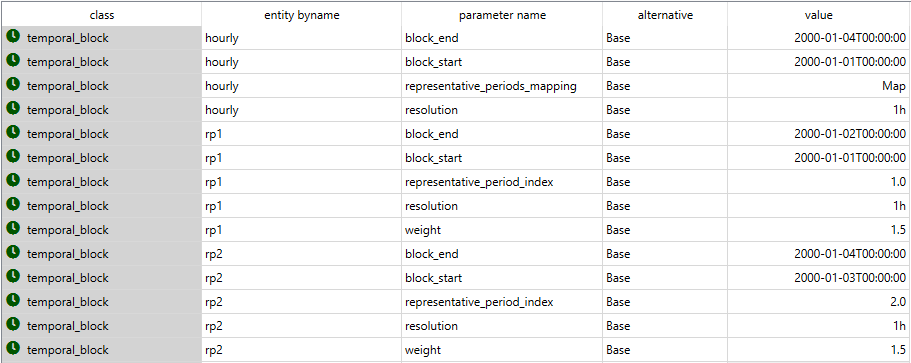
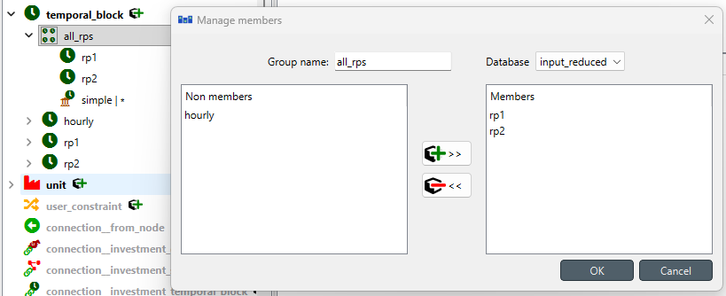
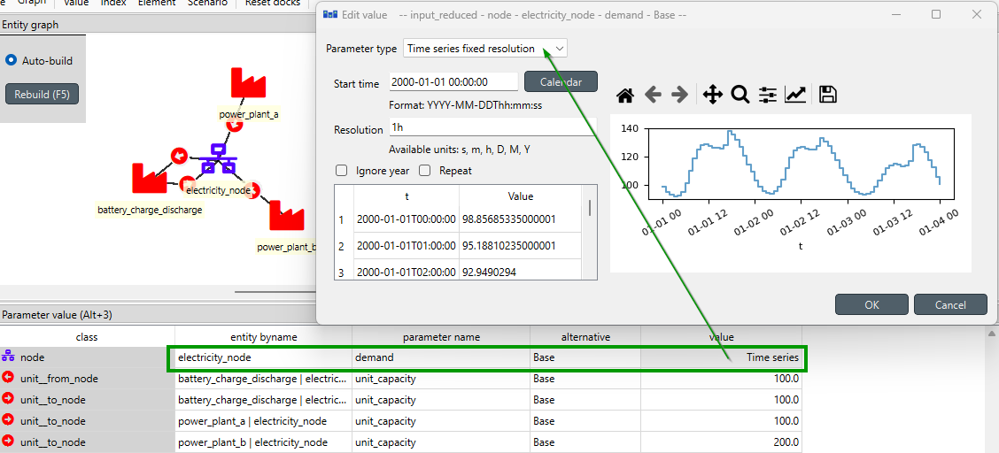
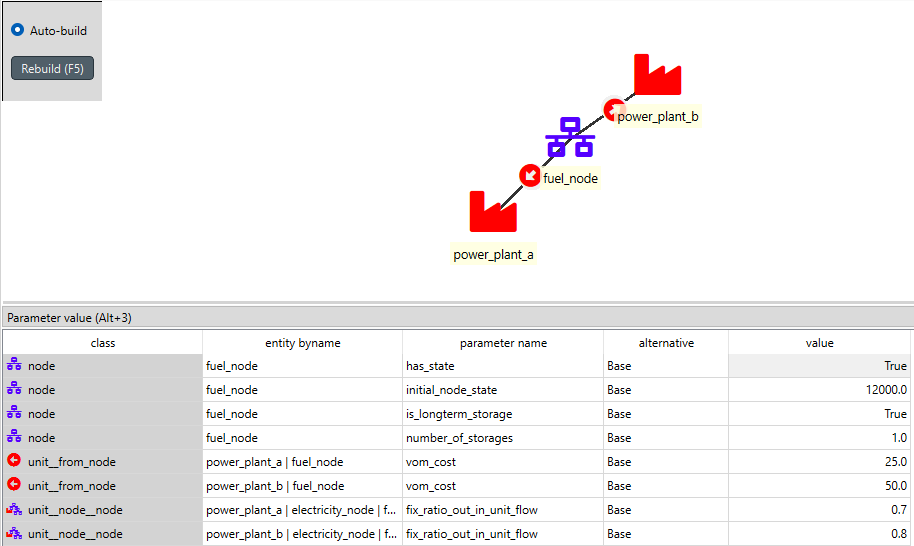
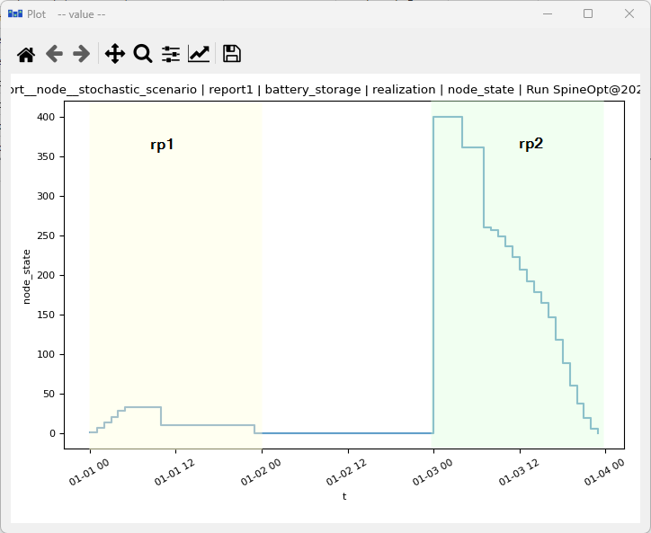
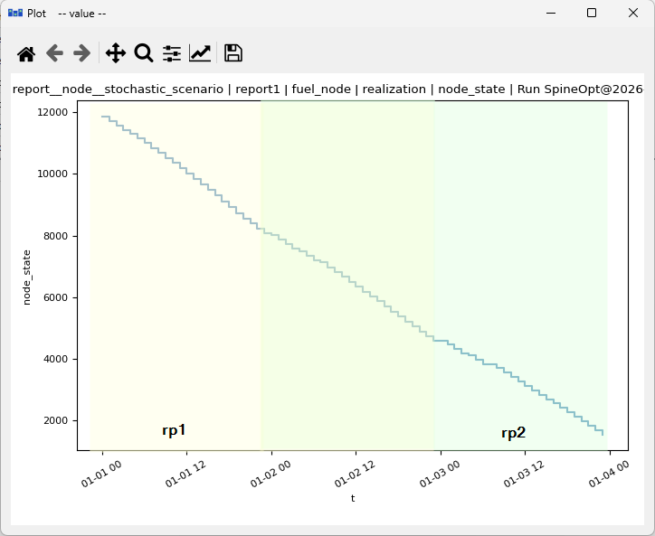

Representative periods tutorial
This tutorial provides a step-by-step guide to show how to include representative periods in a simple energy system with Spine Toolbox for SpineOpt.
Introduction
Welcome to our tutorial, where we will walk you through the process of adding representative periods in SpineOpt using Spine Toolbox. To get the most out of this tutorial, we suggest first completing the Simple System tutorial, which can be found here.
Model assumptions
First, let's start by importing the file representative_periods.json into SpineToolbox and create a workflow to run the model as in the Simple System tutorial. The file has already set up the representative periods for a simple case with seasonal and short-term storage nodes, so you can directly run the workflow to see how it works. However, we recommend going through the steps in this tutorial to understand how to set up representative periods in SpineOpt and analyze the results.
Good! So, let's now have a look to the system we are working with. The image below shows the system structure, which is an extension of the Simple System with two storage nodes: fuel_node and battery_storage.

The main changes to the Simple System are:
- The demand at electricity_node is a time series of three days of 24-hour values instead of a unique value
- The fuel_node is a seasonal storage node with no inflows, but with a initial value of 12000 units at the beginning of the first day, and it can supply both power_plant_a and power_plant_b.
- The battery_storage is a short-term storage node that can be charged from power_plant_a and discharged to the demand node.
- The temporal structure includes two representative periods (called rp1 and rp2), which are mapped to the original temporal blocks such that day 1 is mapped 1:1 to rp1, day 2 is mapped half to rp1 and half to rp2, and day 3 is mapped 1:1 to rp2.
All right! with this information in hand, let's explore the data and see how all this information is setup in SpineOpt.
Temporal Structure
The temporal structure of the model is shown in the image below. We can see that there are three temporal blocks:
- hourly: the original temporal block for the whole time horizon, i.e., 72 hours (or three days).
- rp1 (representative period 1): 24-hour block representing that starts and ends at the beginning and end of day 1.
- rp2 (representative period 2): 24-hour block representing that starts and ends at the beginning and end of day 3.

The representative periods are not necessarily consecutive, they can be any block of time that represents the original temporal block. For instance, rp1 takes the information from the time series in day 1, while rp2 takes information from the time series in day 3. Check the block_start and block_end parameters for each rp temporal block to see this in the input data.
The key parameter that defines the mapping of the original temporal block to the representative periods is representativeperiodmapping. The values in this parameter map each original temporal block to the representative periods through and array that has the weights in each case. For instance, the following figure shows that the second day maps half to rp1 and half to rp2:

Please note that the representativeperiodindex defines the order of the representative periods, which is relevant for the array definition of the weights in the representativeperiodmapping parameter.
Bare in mind in the previuos figure that Python is 0-index based, so the first element of the array corresponds to rp1 and the second element to rp2.
Another important parameter in the representative periods setup is the weight parameter, which defines the weight of each representative period in the objective function. In this case, since we have three days and two representative periods, the weights are 1.5 for both rp1 and rp2. Why? Because rp1 represents day 1 and half of day 2, so it represents 1.5 days. The same applies to rp2, which represents day 3 and half of day 2 😉
For more details on how to set up representative periods in SpineOpt, please check the how-to section How to set up representative days for investment problems, which includes some tools to help you to find the representative periods for large-scale models.
All representative periods
In addition to the individual representative periods, you need a group that includes all the representative periods, see the image below:

You can create an entity group by clicking on the temporal_block structure and then select the option "Add entity group...".
And last, but not least, you need to create a new entity in the model_default_temporal_block entity class that includes all the group of representative periods.
These configurations are needed for SpineOpt to properly interpret the representative periods and create the corresponding variables and constraints in the model.

Nodes
Electricity node
The electricity_node is a demand node with a time series of three days of 24-hour values instead of a unique value as in the Simple System. Note that the demand time series is defined for the whole time horizon (i.e., 72 hours), but the operational variables in the model will only be created for the representative periods. That is what allows to reduce the computational burden of the model while still capturing the key characteristics of the system through the representative periods.

Battery storage node
The configuration of the battery_storage includes the has_state parameter set to true to allow the battery to have a state variable, the nodestatecap, and the numberofstorages as the basic information.

In addition, we can define a cyclic condition for the battery storage by defining node__temporal_block entities, like in the figure below. This cyclic condition means that the state of charge at the end of the last representative period will be equal to the state of charge at the beginning of the first representative period, which is a common assumption for short-term storage in representative periods models.

Fuel node
The configuration of the fuel_node is similar to the battery_storage node. In addition, we can define an initial value for the fuel node at the beginning of the model's time horizon using the initialnodestate parameter.
The parameter is_longterm_storage is set to true for the fuel node, which means that the state of the fuel node can be carried over the whole time horizon, allowing to properly account for seasonal storage in the model. This is a key feature of SpineOpt that allows to capture the dynamics of seasonal storage in representative periods models.

Units and other entity classes
The definition of units and other entity classes is similar to the Simple System, you can check out the Simple System tutorial to learn more.
Results
As usual, you can analyze the results in SpineToolbox. The following figures show the state of charge of the battery storage and the fuel node.
Let's check first the battery storage node. We can see that the state of charge of the battery storage changes within the representative periods, but there is no node state variable for the non-representative periods, since it is not a long-term storage. In addition, we can see that the state of charge at the end of the each representative period is equal to the state of charge at the beginning of the same representative period, which confirms that the cyclic condition is properly defined in the model.

In contrast, the fuel node has a state variable for all the periods, since it is a long-term storage. We can see that the node state of the fuel node changes across the representative periods, which allows to capture the seasonal dynamics of the fuel node in the model. In order to stimate the node state of the fuel node in the non-representative periods, SpineOpt uses the changes (or deltas) in the node state of the corresponding representative periods according to the mapping defined in the representativeperiodmapping parameter. For instance, for the second day, which is mapped half to rp1 and half to rp2, the node state of the fuel node is estimated as a weighted average of the change in the node state in rp1 and rp2. This formulation is known as the delta formulation for representative periods, and it is a common approach to estimate the state of long-term storage in non-representative periods based on the changes in the representative periods.
